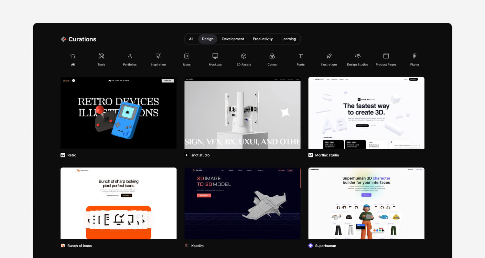

Stunning tools in an ever-growing collection
Curations

A big list simplified
All three of us are using tools every day. When we worked together at our university, the idea of a collection of nice curations suddenly came. We started with a little Notion database-page which included only a few dozen tools. But we wanted to share our collection with others, in a super accessible way. So it came that we have developed a website which uses Notion API to display our collection and give others the ability to submit their findings too. Everything deployed to the public is hand-picked by the Curations team.Through this, thousands of people were able to find more great tools, inspiration and much more.